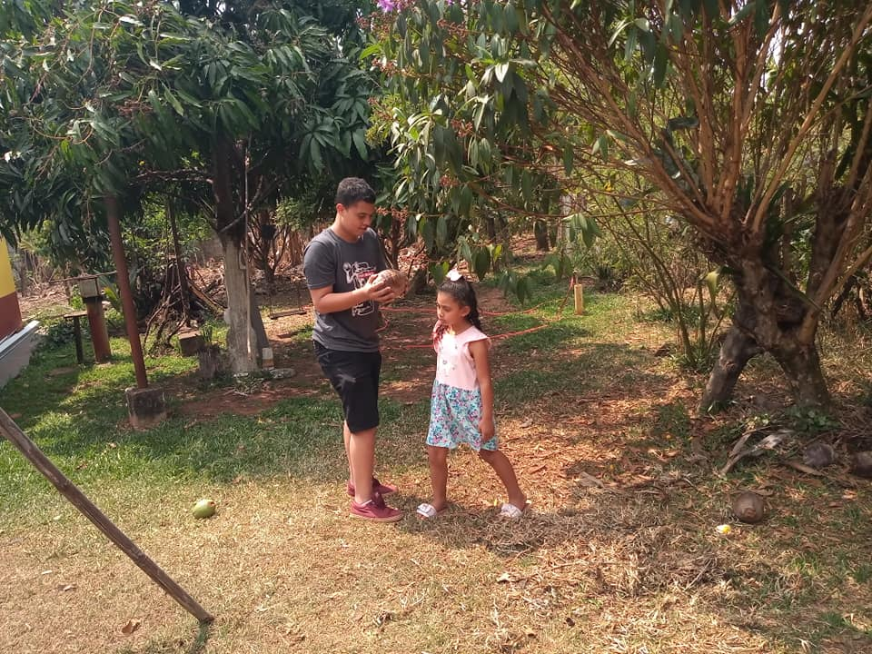

AgroConect
Bem-vindo à AgroConect, a conexão direta entre os agricultores e os consumidores.
Nosso compromisso é com um comércio justo e sustentável, proporcionando acesso fácil a uma variedade de produtos frescos e cultivados localmente. Explore uma seleção diversificada de alimentos de qualidade diretamente dos corações dos campos e das mãos dos agricultores da sua comunidade.
Projeto
O Projeto AgroConect é uma iniciativa inspirada no segundo objetivo da ONU, que visa promover o Fome Zero e a Agricultura Sustentável.
A agricultura sempre desempenhou um papel significativo em minha vida, meu avô, Sidinei Oliveira, é proprietário de uma fazenda em Americana, onde cresci e obtive aprendizados valiosos. Durante minha infância, presenciei de perto as atividades agrícolas e as vendas dos produtos cultivados de sua fazenda. Dentre os produtos, incluíam-se uma variedade de frutas e legumes, tais como alface, tomate, manga, e outros alimentos nutritivos.
Aprendi muito com meu avô sobre os desafios e as recompensas da agricultura, sempre que possível, eu e minha família reservamos um tempo para visitá-lo em Americana e desfrutar de momentos significativos juntos.

